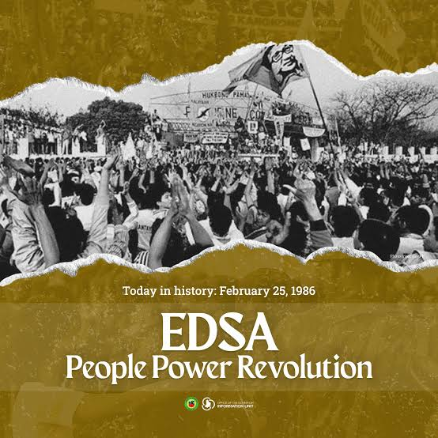
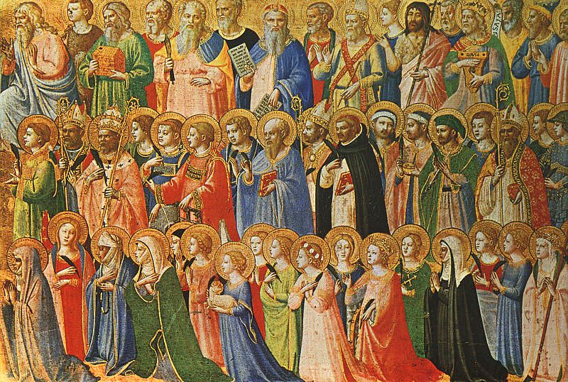
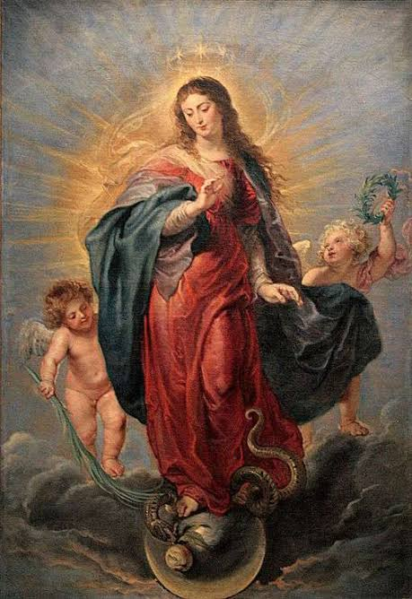
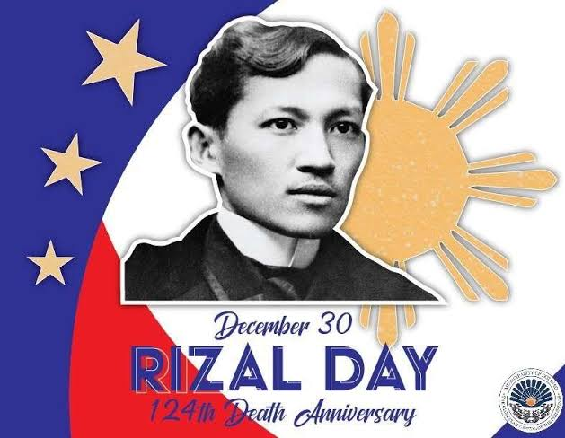

| Su | Mo | Tu | We | Th | Fr | Sa |
|---|---|---|---|---|---|---|
| 1
New Year’s Day
January 1, 2009 — The Philippines celebrates New Year’s Day with family gatherings, fireworks, and festive meals. It marks a hopeful beginning of the year filled with traditions like Media Noche and visiting relatives. |
2 | 3 | ||||
| 4 | 5 | 6 | 7 | 8 | 9 | 10 |
| 11 | 12 | 13 | 14 | 15 | 16 | 17 |
| 18 | 19 | 20 | 21 | 22 | 23 | 24 |
| 25 | 26 | 27 | 28 | 29 | 30 | 31 |
| Su | Mo | Tu | We | Th | Fr | Sa |
|---|---|---|---|---|---|---|
| 1 | 2 | 3 | 4 | 5 | 6 | 7 |
| 8 | 9 | 10 | 11 | 12 | 13 | 14
Valentine’s Day
February 14, 2009 — Valentine’s Day in the Philippines is a popular occasion for couples, families, and friends to express love and affection. It is marked with flowers, chocolates, dates, and even mass weddings organized in some cities. |
| 15 | 16 | 17 | 18 | 19 | 20 | 21 |
| 22 | 23 | 25
EDSA People Power Anniversary

February 25 — This holiday marks the peaceful 1986 revolution that restored democracy in the Philippines. It honors unity, courage, and the triumph of the Filipino people over dictatorship. |
26 | 27 | 28 |
| Su | Mo | Tu | We | Th | Fr | Sa |
|---|---|---|---|---|---|---|
| 1 | 2 | 3 | 4 | 5 | 6 | 7 |
| 8 | 9 | 10 | 11 | 12 | 13 | 14 |
| 15 | 16 | 17 | 18 | 19 | 20 | 21 |
| 22 | 23 | 24 | 25 | 26 | 27 | 28 |
| 29 | 30 | 31 |
| Su | Mo | Tu | We | Th | Fr | Sa |
|---|---|---|---|---|---|---|
| 1 | 9
Araw ng Kagitingan
April 9, 2009 — This holiday honors the bravery of Filipino and American soldiers during World War II, especially the Bataan Death March. Ceremonies are held nationwide to remember their sacrifice. | 10 | 11 | |||
| 12 | 13 | 14 | 15 | 16 | 17 | 18 |
| 19 | 20 | 21 | 22 | 23 | 24 | 25 |
| 26 | 27 | 28 | 29 | 30 |
| Su | Mo | Tu | We | Th | Fr | Sa |
|---|---|---|---|---|---|---|
| 1
Labor Day
May 1, 2009 — Labor Day pays tribute to the Filipino workforce and their contributions to society. It is often marked by rallies, parades, and family leisure activities. | 2 | |||||
| 3 | 4 | 5 | 6 | 7 | 8 | 9 |
| 10 | 11 | 12 | 13 | 14 | 15 | 16 |
| 17 | 18 | 19 | 20 | 21 | 22 | 23 |
| 24 | 25 | 26 | 27 | 28 | 29 | 30 |
| 31 |
| Su | Mo | Tu | We | Th | Fr | Sa |
|---|---|---|---|---|---|---|
| 1 | 2 | 3 | 4 | 5 | 6 | |
| 7 | 8 | 9 | 10 | 11 | 12
Independence Day
June 12, 2009 — Independence Day celebrates the Philippines’ declaration of freedom from Spanish rule in 1898. It is commemorated with flag-raising ceremonies, cultural programs, and parades. | 13 |
| 14 | 15 | 16 | 17 | 18 | 19 | 20 |
| 21 | 22 | 23 | 24 | 25 | 26 | 27 |
| 28 | 29 | 30 |
| Su | Mo | Tu | We | Th | Fr | Sa |
|---|---|---|---|---|---|---|
| 1 | 2 | 3 | 4 | |||
| 5 | 6 | 7 | 8 | 9 | 10 | 11 |
| 12 | 13 | 14 | 15 | 16 | 17 | 18 |
| 19 | 20 | 21 | 22 | 23 | 24 | 25 |
| 26 | 27 | 28 | 29 | 30 | 31 |
| Su | Mo | Tu | We | Th | Fr | Sa |
|---|---|---|---|---|---|---|
| 1 | ||||||
| 2 | 3 | 4 | 5 | 6 | 7 | 8 |
| 9 | 10 | 11 | 12 | 13 | 14 | 15 |
| 16 | 17 | 18 | 19 | 20 | 21 | 22 |
| 23 | 24 | 25 | 26
National Heroes DayAugust 26, 2009 — This day honors the sacrifices of all Filipino heroes, both known and unnamed, who fought for freedom. Tributes and civic activities are organized to inspire patriotism. |
28 | 29 | |
| 30 | 31 |
| Su | Mo | Tu | We | Th | Fr | Sa |
|---|---|---|---|---|---|---|
| 1 | 2 | 3 | 4 | 5 | ||
| 6 | 7 | 8 | 9 | 10 | 11 | 12 |
| 13 | 14 | 15 | 16 | 17 | 18 | 19 |
| 20 | 21 | 22 | 23 | 24 | 25 | 26 |
| 27 | 28 | 29 | 30 |
| Su | Mo | Tu | We | Th | Fr | Sa |
|---|---|---|---|---|---|---|
| 1 | 2 | 3 | ||||
| 4 | 5 | 6 | 7 | 8 | 9 | 10 |
| 11 | 12 | 13 | 14 | 15 | 16 | 17 |
| 18 | 19 | 20 | 21 | 22 | 23 | 24 |
| 25 | 26 | 27 | 28 | 29 | 30 | 31 |
| Su | Mo | Tu | We | Th | Fr | Sa |
|---|---|---|---|---|---|---|
1
All Saints' DayNovember 1, 2009 — Families gather in cemeteries to honor departed loved ones with flowers, candles, and prayers. It is both a religious and cultural tradition in the Philippines. |
2 | 3 | 4 | 5 | 6 | 7 |
| 8 | 9 | 10 | 11 | 12 | 13 | 14 |
| 15 | 16 | 17 | 18 | 19 | 20 | 21 |
| 22 | 23 | 24 | 25 | 26 | 27 | 28 |
| 29 | 30
Bonifacio DayNovember 30, 2009 — Bonifacio Day remembers the birth of revolutionary leader Andrés Bonifacio, founder of the Katipunan. Events include wreath-laying ceremonies and historical commemorations. |
| Su | Mo | Tu | We | Th | Fr | Sa |
|---|---|---|---|---|---|---|
| 1 | 2 | 3 | 4 | 5 | ||
| 6 | 7 | 8
Feast of the Immaculate ConceptionDecember 8, 2009 — This day honors the Catholic belief that the Virgin Mary was conceived without original sin. Filipinos celebrate with masses, processions, and prayers dedicated to the Blessed Mother. |
9 | 10 | 11 | 12 |
| 13 | 14 | 15 | 16 | 17 | 18 | 19 |
| 20 | 21 | 22 | 23 | 24 | 25
Christmas DayDecember 25, 2009 — Christmas in the Philippines is a deeply religious and festive celebration of the birth of Jesus Christ. Families attend Misa de Gallo and share Noche Buena feasts. |
26 |
| 27 | 28 | 29 | 30 | 30
Rizal DayDecember 30, 2009 — Rizal Day commemorates the martyrdom of Dr. José Rizal, a national hero who inspired the Philippine Revolution. Ceremonies at Luneta and across the country highlight his legacy. |
31
New Year's EveDecember 31, 2009 — New Year’s Eve is filled with fireworks, noise-making, and family celebrations to welcome the incoming year. Many traditions are observed for good luck and prosperity. |